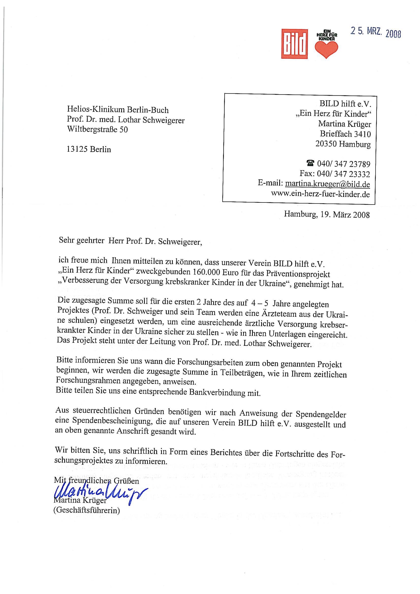
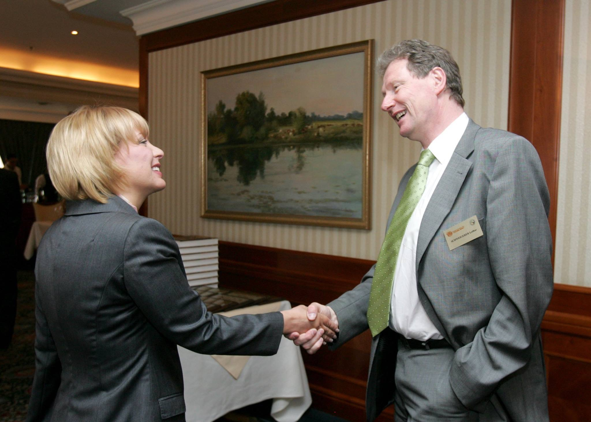
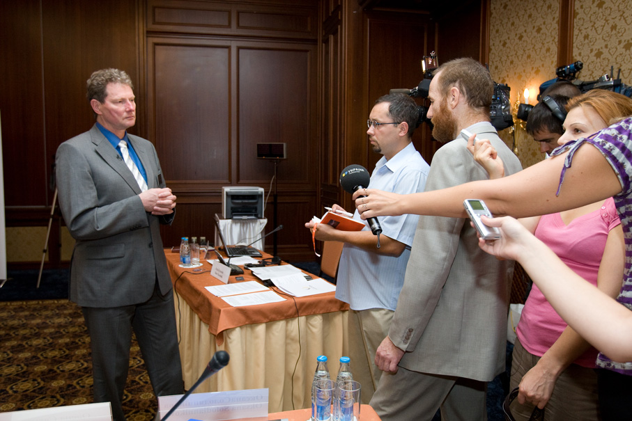

Als wir die ersten krebskranken Kinder aus der Ukraine in Berlin behandelten, war ich zunächst einfach froh, helfen zu können. Jedes Kind, das wir erfolgreich behandeln konnten, war ein Erfolg. Doch je häufiger Kinder aus der Ukraine zu uns kamen, desto deutlicher wurde mir, dass wir damit das eigentliche Problem nicht lösten.
Deutschland konnte nicht die Kinderklinik der Ukraine werden. Selbst wenn wir alle Betten unserer Station ausschließlich für ukrainische Kinder reserviert hätten, hätten wir nur wenigen helfen können. Die eigentliche Ursache lag woanders. Die Behandlungsmöglichkeiten in der Ukraine entsprachen vielerorts nicht dem westlichen Standard. Es fehlte an moderner Diagnostik, an Erfahrung mit aktuellen Therapiekonzepten und häufig auch an den Möglichkeiten, das vorhandene Wissen im klinischen Alltag umzusetzen.
Deshalb entstand eine andere Idee. Nicht die Kinder sollten nach Deutschland kommen, sondern die Ärzte.
Ich entwickelte ein Ausbildungsprogramm, das auf vier Jahre angelegt war. Jeweils ein Arzt und eine Kinderkrankenschwester sollten zunächst einen Intensivsprachkurs am Goethe-Institut absolvieren und anschließend ein Jahr lang auf unserer Station in Berlin mitarbeiten. Danach sollten sie in ihre Heimat zurückkehren und dort das erworbene Wissen weitergeben. Es war kein kurzfristiges Hilfsprojekt, sondern der Versuch, die Versorgung krebskranker Kinder dauerhaft zu verbessern.

Mit diesem Konzept wandte ich mich an die Stiftung „Ein Herz für Kinder“. Im März 2008 erhielt ich von der Geschäftsführerin Martina Krüger die Nachricht, dass das Projekt bewilligt worden war. Wenn das Programm erfolgreich verlief, sollte die Förderung um weitere zwei Jahre verlängert werden. Ich hatte plötzlich das Gefühl, dass aus einer Idee Wirklichkeit werden konnte.
Was ich damals noch nicht ahnte: Mit dieser Bewilligung öffneten sich Türen, von deren Existenz ich vorher nichts gewusst hatte.
Bereits im Frühjahr 2008 traf ich Kateryna Juschtschenko, die First Lady der Ukraine. Sie interessierte sich für unser Vorhaben und lud mich ein, an den Planungen einer neuen nationalen Kinderklinik in Kiew mitzuwirken. Das Projekt trug den Namen „Ukraine 3000“. Meine Aufgabe bestand darin, gemeinsam mit internationalen Experten die radiologische Ausstattung fachlich zu begleiten. Für mich war das eine völlig neue Welt.

Im August desselben Jahres folgte die nächste Einladung. Diesmal von der Stiftung des Oligarchen Rinat Achmetow. Wieder ging es um medizinische Großprojekte. Ich sollte als Vorsitzender einer internationalen Kommission deren Auswahl begleiten. Es hatte sich offenbar herumgesprochen, dass ich mich für die Ukraine engagierte.

Noch wichtiger war für mich allerdings die Zusammenarbeit mit der Kinderklinik in Kiew. Gemeinsam mit ihrem Direktor Dr. Gladuch besprach ich die Auswahl der ersten Teilnehmer unseres Austauschprogramms. Ich wollte die Kandidaten selbst kennenlernen und auswählen. Schließlich sollten sie ein ganzes Jahr mit uns zusammenarbeiten und später in ihrer Heimat Verantwortung übernehmen.
Das Projekt begann langsamer als geplant. Organisatorische Schwierigkeiten, finanzielle Probleme und die niedrigen Gehälter ukrainischer Ärzte verzögerten den Start erheblich. Dennoch kam das Programm schließlich zustande. Parallel behandelten wir weiterhin ukrainische Kinder in Berlin. Das eine schloss das andere nicht aus.
Am 12. Dezember 2009 durfte ich gemeinsam mit Thomas Gottschalk und Vitali Klitschko bei der Gala von „Ein Herz für Kinder“ unser Projekt vorstellen. Viele Zuschauer verbanden den Abend mit einzelnen Schicksalen. Ich verband ihn vor allem mit der Hoffnung, dass aus dieser deutsch-ukrainischen Zusammenarbeit etwas Dauerhaftes entstehen könnte.
In den folgenden Jahren reiste ich immer wieder in die Ukraine. Aus den ersten beruflichen Kontakten entstanden persönliche Begegnungen und Freundschaften. Ich lernte ein Land kennen, das weit mehr war als die Kinderklinik in Kiew oder unsere gemeinsamen Projekte. Die Menschen begegneten uns mit einer Herzlichkeit und Gastfreundschaft, die mich tief beeindruckte.
Besonders in Erinnerung geblieben ist mir ein Besuch im Februar 2013, als Martina Krüger und ich nach Kiew reisten. Die Stadt zeigte uns eine Seite, die ich so nicht erwartet hatte. Von diesem Besuch ist mir weit mehr geblieben als nur medizinische Gespräche.